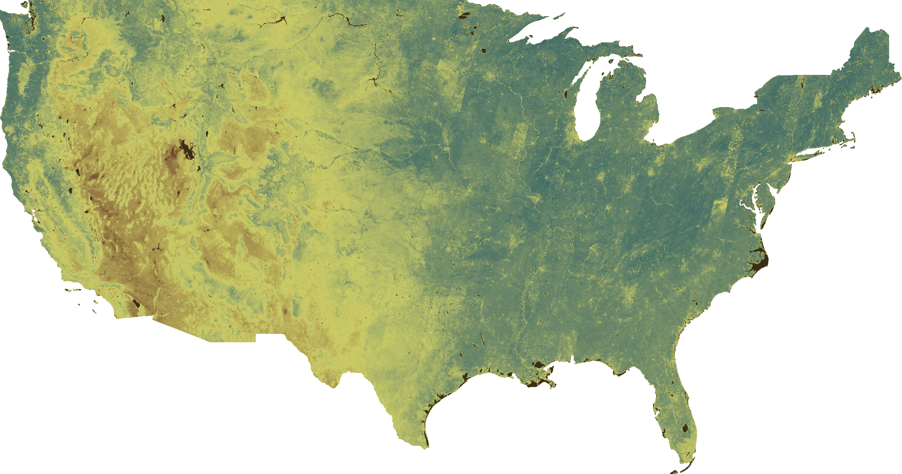

Greenness abstract submitted to ISEE NAC 2023
Background: Sleep is an important determinant of health that may be impacted by environmental exposures, including vegetation (greenness), which may facilitate relaxation/exercise during waketime or buffer pollution during sleep. Prior analyses used greenness exposure around the residence or self-reported sleep. Using mHealth tools, we tracked individual mobility to spatiotemporally refine greenness assessment and objectively measure sleep.
Methods: We passively collected Global Positioning System (GPS) data (10-minute intervals) using a custom-designed smartphone application and sleep data using Fitbit wrist-worn wearable devices (30-second intervals) from Mobile Health Substudy participants, embedded in the nationwide Nurses’ Health Study 3 cohort. We assessed greenness – based on GPS every 10 minutes during 7-day sampling periods across 4 seasons (2018-2020) – using Landsat satellite-derived 30 m resolution Normalized Difference Vegetation Index data (n = 447,120 GPS-located exposure points). To assess associations of waketime greenness with sleep duration, we aggregated daily waketime GPS-located greenness and derived total sleep minutes during the consecutive main sleep period. Additionally, we assessed sleeptime GPS-located greenness while the participant was asleep. Analyses were restricted to participants with ≥8 hours waketime data on ≥3 days with consecutive sleep records (n participants = 209 (57.4%); n sleep records = 2446). We used a generalized linear mixed model fitted with a random intercept for participant, adjusted for age, BMI, GPS-based walkability, temperature, noise, light-at-night, and neighborhood socioeconomic status, weekday, season, and an autoregressive covariance matrix to account for correlation in adjacent time points.
Results: In adjusted models, an interquartile range (IQR) increase in waketime NDVI (IQR 0.25) was associated with 7.24 additional sleep minutes during the consecutive sleep (95% CIs: -1.40, +15.88). An IQR increase in sleeptime NDVI (IQR 0.33) was associated with 2.98 additional minutes during that sleep (95% CIs: -6.53, +12.49).
Conclusion: Waketime and sleeptime greenness may impact sleep duration. Mediation will be explored.
